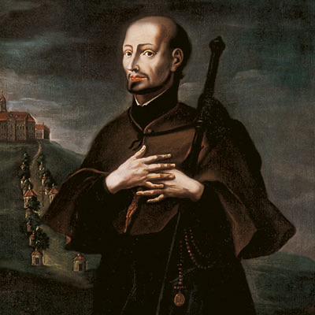

Isusovački blaženici
Svećenik · Pučki misionar
Bl. Johann Philipp Jeningen
1642.–1704.
Johann Philipp Jeningen obilazio je raspršene katoličke zajednice oko Ellwangena. Propovijedao je, ispovijedao i pratio hodočasnike, osobito brinući za zatvorenike, vojnike i bolesne.
Tekst je preveden i prilagođen uz pomoć umjetne inteligencije.

Izvor slike
- Spomendan
- 8. veljače
- Zaštitništvo
- Nije navedeno u izvoru
- Životni vijek
- 1642.–1704.
- Djelovanje
- Misije i evangelizacija · Duhovno vodstvo i razlučivanje · Bolesnici i umirući
- Razdoblje
- 17., 18. stoljeće
- Krštenje
- 5. siječnja 1642., Eichstätt
- Svećeničko ređenje
- 1672., Eichstätt
- Napomena o izvoru
- Zaglavlje navodi 08/02/1704; životopis izričito navodi 8. veljače 1704.
- Datum smrti
- 8. veljače 1704.
U kalendaru zbirke koristi se dan smrti. Taj datum nije zasebna potvrda liturgijskoga spomendana.
Životopis
Johann Philipp Jeningen potjecao je iz Eichstätta. Isusovcima je pristupio 1663., a svećenikom postao 1672. U Altöttingu je stekao iskustvo među hodočasnicima, zatim predavao u Mindelheimu i Dillingenu. Od 1680. djelovao je u Ellwangenu. Pučke misije postale su središte njegova poslanja: obilazio je raspršene katolike bez vlastitoga župnika i pomagao zajednicama kojima je rat ostavio razorene crkve.
Njemački isusovački arhivist i nekadašnji vicepostulator Hans Grünewald dopunjuje tu sliku obiteljskim i školskim pojedinostima. Jeningenov otac Nikolaus bio je zlatar i gradonačelnik, a brat Franz postao je dominikanac. Philipp je stekao stupanj magistra u Ingolstadtu i poslije predavao latinski, grčki i vjeronauk. Pisma Franje Ksaverskoga budila su u njemu želju za Indijom. Više je puta molio poglavare za misije, ali mu je povjerena Njemačka.
Na Schönenbergu je razvijao hodočasnički pastoral. Držao je duhovne vježbe svećenicima, ispovijedao i poučavao vjeru. Osobito je pratio vojnike, zatvorenike i osuđenike na smrt. Marijanska pobožnost i Euharistija hranile su njegov jednostavan redovnički život. Slabo zdravlje nije ga odvojilo od ljudi; služio im je do posljednje bolesti. Umro je 8. veljače 1704.
Gradnja nove hodočasničke crkve od 1682. do 1685. tražila je i pribavljanje novca, za koji je neumorno molio dobročinitelje. Prema Grünewaldu obišao je približno tisuću mjesta u četirima biskupijama. Nije se oslanjao na govornički sjaj: ljude je privlačila podudarnost između propovijedi i vlastitoga života. Bio je i osebujan; poglavar mu je zabranio zamišljeni javni pokornički nastup u šaljivoj odjeći. Duhovna iskustva razlučivao je svjestan da vlastita mašta nije isto što i Božja poruka. U narodu je ostao upamćen kao dobri otac Philipp.
Tekst je preveden i prilagođen uz pomoć umjetne inteligencije.
Pročitaj više na izvornoj stranici ↗